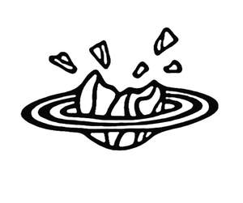

Trade Mark Journal No.2025/014 4 April 2025
UK00004178397 24 March 2025 (25,35)

- Class 25
- Clothing, headgear and footwear; t shirts; baseball caps and hats; beanie hats; beach footwear; bottoms [clothing]; jackets; children’s clothing, footwear and headgear; casual wear; clothing for sport; clothing for babies; clothing made of fur; coats for men and women; collars; costumes; denim clothing; detachable collars; boxer shorts; flip-flops; jumpers; socks; footwear for sports; gloves; trainers; headbands; hoodies; jerseys [clothing]; light reflecting jackets; loungewear; sweatpants; neckerchiefs; outer clothing; pyjamas; printed t shirts; polo shirts; rainwear; robes; rugby shirts; football shirts; rugby shirts; shirts; shorts; shower caps; swimwear; ties; tops; wellington boots; waterproof and weather resistant clothing, footwear and headgear; wristbands; yoga clothing.
- Class 35
- Retail services in relation to the sale of clothing, headgear and footwear, t shirts, baseball caps and hats, beanie hats, beach footwear, bottoms [clothing], jackets, children’s clothing, footwear and headgear, casual wear, clothing for sport, clothing for babies, clothing made of fur, coats for men and women, collars, costumes, denim clothing, detachable collars, boxer shorts, flip-flops, jumpers, socks, footwear for sports, gloves, trainers, headbands, hoodies, jerseys [clothing], light reflecting jackets, loungewear, sweatpants, neckerchiefs, outer clothing, pyjamas, printed t shirts, polo shirts, rainwear, robes, rugby shirts, football shirts, rugby shirts, shirts, shorts, shower caps, swimwear, ties, tops, wellington boots, waterproof and weather resistant clothing, footwear and headgear, wristbands, yoga clothing, Textile goods and substitutes for textile goods namely household linens and fabrics for household use, cushion covers, towels, bed linen and blankets, cushion covers, articles of leather and imitations of leather namely leather derived from animals and faux leather, bags, handbags, shoulder bags, toilet bags, carrier bags, rucksacks, backpacks, bum-bags, gym bags, sports bags, casual bags, briefcases, attaché cases, music cases, satchels, trunks and travelling bags, travel cases, luggage, suitcases, holdalls beauty cases, carriers for suits, for shirts and for dresses, tie cases, notecases, notebook holders, document cases and holders, credit card cases and holders, wallets, purses, umbrellas, parasols, belts, parts and fittings for all the aforesaid goods, Sunglasses, spectacles, fashion spectacles, protective goggles and masks for the eyes and for sporting activities, clip-on sunglasses, protective masks, cases and holders for spectacles and masks, spectacle chains, parts and fittings for all the aforesaid good, cosmetics, toiletry preparations, perfumery, essential oils, sporting articles, candles, lamps, lighting equipment, stationery, furniture, mirrors, picture frames, household or kitchen utensils and containers, games, toys and playthings.
BROKEN PLANET MARKET LTD
Representative: Brandsmiths SL Limited